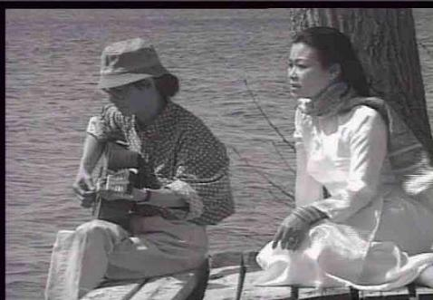

Nói Về Trịnh Công Sơn thì chẳng bao giờ hết chuyện. Chỉ cần ghi lại một buổi tranh luận giữa bạn bè về nhạc, về con người Trịnh Công Sơn, là đã có biết bao điều để nói. Người ta cũng có thể viết những cuốn sách rất dày nói về ông, về nhạc của ông, với nhũng phê phán, nhận định, khen chê hay dở... Cái khó bao giờ cũng vẫn là bắt đầu như thế nào.
Khi ấy là vào những năm 66-67 thì phải. Tôi nhớ, lần đầu nghe tình khúc Trịnh Công Sơn, cái cảm giác ấy lạ lắm, thú vị lắm. Một vài ca sĩ đã trình bày Diễm xưa trước đó, nhưng phải đợi đến lúc Trịnh Công Sơn tìm ra được Khánh Ly, người nghe mới thực sự nghe ra Diễm xưa. Sau đó là những Nhìn những mùa thu đi, Lời buồn thánh, Tuổi đá buồn, Hạ trắng, Mưa hồng, Nắng thủy tinh... tất cả đều rất mới, rất lạ, rất là cuốn hút người nghe. (Những ướt mi, Thương một người trước đó ít được biết đến dù được thể hiện qua những giọng ca khá nổi tiếng thời ấy).
Người ta chờ đón những tình khúc tiếp theo nữa của Trịnh Công Sơn, và ông đã không làm mọi người thất vọng. Những Biển nhớ, Tình nhớ, Tình xa, Tình sầu, Như cánh vạc bay, Ru ta ngậm ngùi... lần lượt theo nhau ra đời, lần lượt được người nghe tán thưởng. Có thể nói đây là thời kỳ viết nhạc sung sức nhất của Trịnh Công Sơn, và những tình khúc hay nhất, phổ biến nhất, quyến rũ người nghe nhất đã ra đời trong thời kỳ này. Nhạc tình Trịnh Công Sơn đã hoàn toàn chinh phục trái tim người nghe vì cái mới, cái lạ, cái đẹp, đến mức có một lúc nào đó mọi người tưởng như đã quên đi tên tuổi của các nhạc sĩ khác, quên đi những ca khúc thịnh hành trước đó, và chỉ còn lại nhạc Trịnh Công Sơn. Ở mỗi quán café, mỗi góc phố, mỗi con đường đều nghe vẳng ra tiếng đàn guitare bập bùng, những nốt nhạc đệm rời rạc, và giọng hát khao khao cất lên những lời buồn bã kể lể về thân phận, về quê hương chiến tranh và cả về tình yêu của những lứa đôi trong thời buổi ấy nữa. Nhạc Trịnh Công Sơn có ma lực gì mà cuốn hút, mê hoặc người nghe đến như vậy? Chắc không phải là một loại "thời trang nhạc tuyển". Nếu chỉ là nhạc thời trang hoặc một cái mốt thời thượng thì đâu có sống lâu đến vậy, nhiều lắm cũng chỉ qua được mấy mùa. Thử nghe lại bài Diễm xưa xem sao. Về giai điệu, cũng chẳng có gì đặc biệt lắm, cũng là tiết tấu chầm chậm, dễ dãi, những ngắt câu ngắt nhịp, lặp đi lặp lại. Câu nhạc đầu lại na ná câu đầu một bài hát thể điệu slow rock phổ biến từ những năm trước đó (Bước chân chiều chủ nhật, Đỗ Kim Bảng). Không có gì đặc biệt. Vậy thì cái hay, cái lạ của nhạc Trịnh Công Sơn, của bài hát, là ở lời chứ đâu phải ở nhạc. Đến cái tựa Diễn xưa cũng đã là lạ, cũng đã gợi ra nhiều dấu hỏi. Tại sao là Diễm, Diễm nào vậy, Diễm xưa thế nào, Diễm nay ra sao? Diễm xưa, mà sao lại chỉ kể toàn chuyện mưa. (Hạ trắng, mà sao lại chỉ kể toàn chuyện nắng). Mưa Trịnh Công Sơn cũng lạ, không giống những cơn mưa của những bài nhạc khác. “Nghe lá thu mưa reo mòn gót nhỏ...", rồi lại "Trên bước chân em âm thầm lá đổ...". Vậy thì mưa rơi hay lá rơi, nghe tiếng mưa hay nghe tiếng lá? Ngôn ngữ Trịnh Công Sơn nghe cũng lạ với những “tầng tháp cổ, vết chim di, xanh buốt, đau vùi, bia đá, đá sỏi, phiêu lãng, lãng du...". Người ta vẫn nói chuyến xe, chuyến tầu, chuyến đò, chuyến phà, chưa thấy có ai nói “buổi chiều ngồi ngóng những chuyến mưa qua". Lại còn những câu hỏi: “Làm sao em biết bia đá không đau? Làm sao em nhớ những vết chim di?" Biết đâu mà trả lời. Những ý tưởng có khi chẳng dính dấp, liền lạc gì với nhau. “Mưa vẫn hay mưa cho đời biển động" thì có liên hệ gì đến chuyện bia đá đau hay không đau. "Xin hãy cho mưa qua vùng đất rộng" thì có liên quan gì tới “người phiêu lãng quên người lãng du”. Nghe như ông nói gà bà nói vịt, hoặc lấy câu trong bài hát này bỏ vào bài hát kia vậy. Vậy mà tuổi trẻ ngày ấy đã phải lòng Diễm xưa đã nghe đi nghe lại, nghe mãi nghe hoài không biết chán. Diễm xưa, Trịnh Công Sơn. Trịnh Công Sơn, Diễm xưa, bao nhiêu quán café mang tên Tình nhớ, Hạ trắng, Mưa hồng..., và những cô chủ quán hay những cô cashier xinh đẹp không đợi khách yêu cầu đã tự động cho chạy liên tục hết cuốn băng này đến cuốn băng khác Ca khúc da vàng, những Tình khúc Trịnh Công Sơn, mà không cần phải bận tâm lắm đến chuyện café ngon hay không ngon.
Nhạc Trịnh Công Sơn quyến rũ người nghe đến như vậy, nhưng có một điều lạ là không phải ca sĩ nào cũng hát được nhạc Trịnh Công Sơn. Con số những ca sĩ hát nhạc họ Trịnh này nghe được không có nhiều, chỉ một vài. Ngay đến những ca sĩ tên tuổi thời ấy, hát thử Trịnh Công Sơn vài bài, cũng không thành công, cũng không nghe ra Trịnh Công Sơn. Từ đó, biết là không ăn, thôi không hát thêm nữa. Những ca sĩ khác, tự lượng sức mình, không chơi nhạc Trịnh Công Sơn, vì không muốn "như cánh chim chìm xuống". Làm sao biết được giọng hát nào là thích hợp, là thể hiện được nhạc Trịnh Công Sơn? Cứ thử hát đi, thính giả sẽ nói cho biết, người nghe sẽ trả lời. Nghe nhạc Trịnh Công Sơn từ một giọng ca không phải để hát nhạc Trịnh Công Sơn giống như là uống rượu giả vậy. Từ khi những giọng ca chuyên hát nhạc Trịnh Công Sơn bỏ nước ra đi, ở trong nước người ta vẫn loay hoay tìm kiếm, cố gắng tìm cho bằng được những giọng ca khác, để thay thế, cố gắng lăng-xê một vài tên những ca sĩ cũ gắn liền với nhạc Trịnh Công Sơn. Có vẻ nhạc Trịnh Công Sơn thích hợp với giọng nữ nhiều hơn, chỉ một vài nam ca sĩ thể hiện được một đôi bài... Phải nghe Khánh Ly hát Diễm xưa mới biết thế nào là "trong cơn đau vùi", mới thấy đau xót “làm sao có nhau”, mới thấy "hằn lên nỗi đau”, mới hiểu được tại sao sỏi đá cũng cần có nhau”. Còn phải nghe "sầu thôi xuống đầy" bằng những nốt nhạc luyến láy mềm mại ở chữ “xuống”, và bằng chính giọng hát ấy, mới thấy được cánh lá khô lả tả xoay vòng trước khi chạm đất, là dấu chấm “cuối cùng cho một tình yêu”. Phải nghe Lệ Thu hát Hạ trắng mới nghe ra được tận cùng cái thê thiết của "gọi tên em mãi suốt cơn mê này" trong tiếng kèn saxo réo gọi. Và còn phải nghe cả Ru ta ngậm ngùi, bằng chính giọng hát ấy, mới nghe ra nỗi cô đơn sâu thẳm của Người về soi bóng mình, giữa tường trắng lặng câm.
Cái mới trong ngôn ngữ Trịnh Công Sơn
Trong những lời nhạc Trịnh Công Sơn, người ta nhặt được rất nhiều cái mới, từ cách dùng chữ cho đến những ý tưởng. Về màu sắc chẳng hạn, trước đây ta đã có xuân hồng, hạ đỏ, thu tím, thu vàng... thì nay lại có thêm “hạ trắng", và cả những cơn “mưa hồng" (của những cánh phượng rơi), “mưa xanh" (của những lá me bay) cho đủ sắc màu. Về nắng thì có "nắng thủy tinh vàng". Sau tóc mềm, tay mềm, vai mềm, nay lại có thêm “ngoài kia không còn nắng mềm" (Chiều một mình qua phố). Đôi lúc cái mới được đẩy đi quá đà: hết nắng sớm, nắng chiều, lại đến "có khi nắng khuya chưa lên" (vẫn Chiều một mình qua phố). Tại sao không? Nhạc sĩ họ Trịnh có thể nói "Có mưa khuya thì cũng phải có nắng khuya chứ." Và “nắng như môi hoàng hôn trên phố” (Chiều trên quê hương tôi) cũng phải được kể là... nắng mới.
Ta có nghe bể mắt, hồ mắt, giếng mắt, giòng mắt... chứ chưa nghe ai nói "chiều đã đi vào vườn mắt em" (Nắng thủy tinh).
Ta có nghe giọt buồn (chắc là giọt café), sợi buồn (con nhện giăng mau) chứ chưa thấy ai nói "ta thấy em trong tiền kiếp với cọng buồn cỏ khô" (Rừng xưa đã khép). Nghe hay hơn là "cọng cỏ khô buồn". Tương tự, "tóc xanh mấy mùa", "hoa vàng mấy độ", "sen hồng một nụ”, “quỳnh hương một đóa" nghe hay hơn là mấy mùa tóc xanh, mấy độ hoa vàng, một nụ sen hồng, một đóa quỳnh hương.
Ta cũng đã nghe giọt mưa, giọt đắng, giọt sầu... nay lại có thêm "giọt chiều trên lá, như mắt người cười giữa chiều phai" (Chiều trên quê hương tôi).
Có rất nhiều những cái mới như vậy trong lời nhạc Trịnh Công Sơn.
Lối sử dụng tính từ như một danh từ, và ngược lại, trước ông vẫn có người dùng, thế nhưng những chữ ông dùng nghe vẫn cứ mới và thú vị, như "nghe những tàn phai", "tôi là ai mà còn trần gian thế...?”.
Có những chữ dùng rất cũ, qua tay Trịnh Công Sơn, như được làm mới lại, vì được sử dụng với những ý mới mẻ:
Trên hai vai ta đôi vầng nhật nguyệt, rọi suốt trăm năm một cõi đi về... (Một cõi đi về)
“Nhật nguyệt" là những chữ thật xưa cũ, đi với “trên hai vai ta" và “rọi suốt trăm năm" lại nghe như có vẻ mới.
Chữ “cõi” trong cõi sống, cõi chết, cõi nhân gian, cõi người ta..., dùng trong "một cõi đi về” như được khoác cho chiếc áo mới. Nói "một chốn đi về” nghe vừa hẹp, vừa không được trọn ý.
Đôi tay nhân gian chưa từng độ lượng... (Một cõi đi về)
“Nhân gian" thì cũ, nhưng “đôi tay nhân gian" quả là chưa có ai dùng, và cũng không thể tìm ra được chữ nào hay hơn để thay thế.
Em theo đời cơm áo, mai ra cùng phố xôn xao... (Yêu dấu tan theo)
“Cơm áo" là chữ dùng quá thường nhưng "đời cơm áo" thì nghe lại mới, nhất là đi với “phố xôn xao"
Thôi em đừng khóc nuối, cho môi còn chút thanh tân... (Yêu dấu tan theo).
Thực khó tìm ra được chữ nào hơn "thanh tân" để chỉ đôi môi chưa hôn ai một lần.
Chữ "chút” ở câu trên cũng hay được ông dùng. Cái gì cũng chỉ chút chút thôi, không nhiều lắm, chỉ là một thoáng mong manh. Chữ ấy tuy cũ mà lại mới, làm đẹp thêm câu hát:
Có chút tình thoảng như gió vội (Như một lời chia tay)
Có chút nắng trong tiếng gà trưa... (Em còn nhớ hay em đã quên)
Đi về đâu hỡi em, khi trong lòng không chút nắng... (Đợi gọi em biết bao lần)
Tôi xin làm chút gió, mát thêm những bờ vai... (Vì tôi cần thấy em yêu đời)
Tóc nào hãy còn xanh, cho ta chút hồn nhiên... (Ru ta ngậm ngùi)
Dịu dàng trao chút hương hoa mùa xuân... (Vẫn có em bên đời)
Cho ta còn mãi mãi, chút mùi phấn hương bay... (Yêu dấu tan theo)
Có rất nhiều "chút” như vậy trong những lời nhạc Trịnh Công Sơn.
Khi nói "tự do như gió thổi trên đồng ruộng", hoặc "hạnh phúc như đón mẹ đi chợ về” là mượn hình ảnh để cụ thể hóa những ý niệm trừu tượng. Ở Trịnh Công Sơn, ta gặp rất nhiều những lối diễn đạt như vậy. Sau mỗi chữ "như" là mỗi hình ảnh mỗi ý tưởng giàu tính sáng tạo:
Tôi như từng cánh diều vui... (Nguyệt ca)
Chuyện trò với lá cây, rồi buồn như lá bay... (Tình sầu)
Nhìn người đi như mây vô danh... (Hãy cứ vui như mọi ngày)
Em cười em nói, như sóng đùa biển khơi... (Tuổi đời mênh mông)
Đời sao im vắng như đồng lúa gặt xong, như rừng núi bỏ hoang... (Ru ta ngậm ngùi)
Cho con mắt người tình, ấm như lời hỏi han... (Những con mắt trần gian)
Có rất nhiều, rất nhiều những cái "như" như vậy trong lời nhạc Trịnh Công Sơn.
Ta còn gặp những cách ví von khác: "Chiều nay em ra phố về, thấy đời là những quán không" (Nghe những tàn phai), hoặc: "Đời ta có khi tựa lá cỏ, ngồi hát ca rất tự do" (Đêm thấy ta là thác đổ).
Trái tim Trịnh Công Sơn dễ bắt được những rung động của thiên nhiên. Trong những lời nhạc của ông, hoa cỏ, núi đồi, sông suối, nắng gió, mùa màng... cũng đều biết cảm xúc, biết nhớ biết thương, biết cười biết khóc, biết vui biết buồn...
Tóc em cười trong gió... (Yêu dấu tan theo)
Gió đến chơi từ biển xa... (Chiều trên quê hương tôi)
Gió sẽ mừng vì tóc em bay, cho mây hờn ngủ quên trên vai... (Như cánh vạc bay)
Dưới chân ngày cỏ xót xa đưa... (Cỏ xót xa đưa)
Nhớ gì mà nắng vàng cánh rừng... (Vẫn có em bên đời)
Ngày mai em đi, đồi núi nghiêng nghiêng đợi chờ, sỏi đá trông em từng giờ... (Biển nhớ).
Phải có một trái tim thật là nhạy cảm, những giác quan thật là bén nhạy, mới có thể đọc được, nghe được và hiểu được ngôn ngữ kỳ diệu của thiên nhiên, mới có thể “chuyện trò với lá cây” hay "hôn một nụ hồng, hỏi thăm về giọt nắng", hoặc "đi trong sương mù, gọi cây lá vào mùa".
Thử làm một sự so sánh giữa Trịnh Công Sơn và các nhạc sĩ khác trong cách diễn đạt lời nhạc: Trong lúc Phạm Duy viết: “Nghìn trùng xa cách, người đã đi rồi..." (Nghìn trùng xa cách), thì ông viết: "Từ lúc đưa em về, là biết xa nghìn trùng... " (Như cánh vạc bay). Cung Tiến viết: "Lòng cuồng điên vì nhớ..." (Hoài cảm), thì ông viết: "... chợt từng bước em là từng mũi đinh cuồng điên" (Tưởng rằng đã quên). Phạm Đình Chương viết: "Người đi qua đời tôi..." (Người đi qua đời tôi, thơ Trần Dạ Từ), thì ông viết: "Đời tôi có ai vừa qua..." (Đêm thấy ta là thác đổ).
Ngôn ngữ Trịnh Công Sơn đôi lúc cũng được đi vào những sinh hoạt thường ngày trong cuộc sống. Bạn hỏi thăm sức khỏe: "Hồi này có gì lạ?", trả lời: “Thì cũng một ngày như mọi ngày thôi". Bạn rủ ra quán nhậu, không muốn đi bèn nói: "Ngồi nhà nhậu thoải mái hơn, đi đâu loanh quanh cho đời mỏi mệt".
Cái lạ trong ngôn ngữ Trịnh Công Sơn
Cái mới được đẩy đi xa chút nữa dễ trở thành cái lạ. Cái lạ dễ thấy trong lời nhạc Trịnh Công Sơn trước tiên là những điều không lý giải được. Những ý tưởng trong một bài nhạc lại như có vẻ chắp vá, thiếu mạch lạc, thậm chí đứt đoạn, rời rạc, thường tạo những khó hiểu hoặc bất ngờ cho người nghe: “Tim nào có bình yên" mà sao lại "ta rêu rao đời mình"?
“Từ khi trăng là nguyệt" mà sao lại "trong tôi có những mặt trời"? (mà không phải là mặt trăng).
“Đôi khi thấy trăm vết thương" mà sao lại "rồi như đá ngây ngô”?
“Mặt trời nào soi sáng tim tôi" mà sao lại "để tình yêu xay mòn thành đá cuội”?
“Xin hãy cho mưa qua miền đất rộng" mà sao lại “ngày sau sỏi đá cũng cần có nhau”?
Người nghe tuy có thích nhạc Trịnh Công Sơn nhưng lại ít khi thuộc được trọn bài nào của ông cũng vì những chỗ khó hiểu và những ý tưởng không liền lạc như vậy.
Ta còn gặp những cái bất ngờ thú vị khác. "Sống trong đời sống cần có một tấm lòng, để làm gì em biết không?" Ông hỏi vậy, và người nghe chưa kịp suy nghĩ để trả lời thì ông đã giải đáp luôn: "Để gió cuốn đi". Lát sau lại hỏi tiếp: “Sống trong đời sống cần có một mối tình, để làm gì em biết không?" Câu trả lời vẫn là "để gió cuốn đi". Một người bạn tôi gọi những câu hát này là "đố vui để học".
Đến cả những cái tựa bài hát nghe cũng là lạ "Gần như niềm tuyệt vọng" nghĩa là sao? Mới chỉ gần gần thôi, chưa đến nỗi tuyệt vọng lắm, vẫn còn có chút hy vọng(?). Vậy thì cũng được an ủi phần nào. "Cỏ xót xa đưa" nghe cũng hay hay, nhưng đến "Tình xót xa vừa" thì lại hơi khó hiểu. Biết thế nào là vừa. Là xót xa vừa phải thôi, không nhiều lắm chắc? "Nghe những tàn phai" nghe cũng hay hay, nhưng đến “Xanh lòng phai tàn" thì lại hơi lấn cấn. Nghe giống như... "xanh vỏ đỏ lòng".
Có những chữ Trịnh Công Sơn dùng đi dùng lại nhiều lần, đôi lúc có hơi lạm dụng, nghe không được ổn lắm. “Khói trời mênh mông" hoặc "tuổi đời mênh mông" nghe vẫn hay và dễ hình dung hơn là "mắt cười mênh mông giữa đôi bàn tay" (Vẫn có em bên đời). Dù là mắt cười hay môi cười thì cũng khó mà mênh mông được (không giống như “mắt em mênh mông buồn"). Tương tự, không dễ gì hình dung được thế nào là một tiếng hát... rực rỡ, xanh xao, hay vàng vọt, như là "nghe tiếng hát xanh xao của một buổi chiều” (Lời buồn thánh). Nhưng cũng không hề gì, người hát vẫn cứ hát, người nghe vẫn cứ nghe, có khi lại thấy thích vì những cái là lạ ấy.
Có khi những cái sai vẫn cứ được mọi người chấp nhận, và đấy cũng là một cái lạ nữa. "Một trăm năm đô hộ giặc Tây" (Gia tài của mẹ), câu ấy một đứa bé lên mười ở Việt Nam cũng biết là sai, vậy mà vẫn cứ được hát đi hát lại một thời nào ở trong nước. Lỗi ấy hoặc vì thiếu chữ (để sánh đôi với "một ngàn một năm nô lệ giặc Tầu ở câu trước), hoặc vì trong lúc đặt lời phải chịu gò ép theo những nốt nhạc cao thấp, trầm bổng. (Phạm Duy chẳng hạn, cũng không vượt qua được cái khó tương tự. "Chuyện đôi ta... buồn ít hơn vui" là câu hát mà ông rất muốn viết ngược lại để kể về một chuyện tình buồn thảm mà hai kẻ yêu nhau nay đã "Nghìn trùng xa cách?”). Hoặc, trong một lúc vội vàng, nhạc sĩ họ Trịnh đã viết nhầm một chữ trong câu hát, đọc thành "công viên chiều qua rất... ngắn" (Nhìn những mùa thu đi), và đến nay nhiều người vẫn cứ hát theo như vậy mà không bao giờ chịu đổi lại thành "rất nắng", cũng không bao giờ tự hỏi đâu là sự khác biệt giữa... công viên ngắn và công viên dài?
Sau một quá trình nhiều năm nghe nhạc Trịnh Công Sơn, và lắm lúc còn hát nghêu ngao nữa, tôi thấy cần phải thú nhận một điều, có đôi khi nghe những lời nhạc của ông, tôi thực tình không hiểu ông muốn nói điều gì, và tôi nghĩ may ra chỉ có ông mới giải thích nổi. Tôi nói "may ra" là bởi vì, nói thật, nhiều khi tôi chắc ông cũng không hiểu gì... hơn tôi lắm. Có khác một điều, ông viết ra những lời ấy là xong, là "thân nhẹ nhàng như mây", còn lại người nghe là chúng tôi thì cứ phải suy ngẫm, phải loay hoay giải đoán này nọ, thật là mệt mỏi.
Tôi có đứa cháu thích nhạc Trịnh Công Sơn. Có hôm cháu hỏi: “Cháu thích bài này. Nhưng mà có mấy câu cháu không hiểu được. Tại sao "trong khi ta về lại nhớ ta đi"? Nghe giống như “Vân Tiên cõng mẹ chạy vô chạy ra" quá. Còn "từng lời bể sông nghe ra từ độ suối khe" nghĩa là sao?" Sau khi loay hoay giải thích những đối nghịch và tương quan giữa đi, về, sông, biển mà đứa cháu có vẻ vẫn không chịu hiểu, tôi đành phải nói: “Vấn đề là cháu thích nghe hay không thích nghe, thế thôi. Nếu thích là tốt, cứ tiếp tục nghe. Đừng băn khoăn, đừng nghi ngại". Nhạc Trịnh Công Sơn là nhạc "đừng hỏi tại sao". Tất nhiên là câu trả lời không làm đối tượng thỏa mãn, nên sau đó tôi lại phải đưa ra lối giải thích khác: "Câu hỏi của cháu là những “lời bể sông", mà cách đây ba mươi năm, nghĩa là "từ độ suối khe", chú cũng đã từng hỏi như vậy". Không rõ đối tượng có thỏa mãn hơn, nhưng từ đó không thấy hỏi han gì thêm nữa, trong lúc nghe thì vẫn cứ nghe. Nói điều này để thấy rằng đã có đến hai thế hệ nghe và yêu thích nhạc Trịnh Công Sơn.
Cái lạ được nâng lên một bậc nữa lại đi đến chỗ cầu kỳ, lập dị, hoặc sáo rỗng, vô nghĩa, thường thấy trong những bài nhạc Trịnh Công Sơn viết ở thời kỳ đầu, như: “Ngựa hồng đã mỏi vó, chết trên đồi quê hương... " hay "người hãy nhớ mang theo hành trang qua khoang trời vắng chân mây địa đàng" (Xin mặt trời ngủ yên); hoặc như: “Có khi nắng khuya chưa lên, mà một loài hoa chợt tím..." (Chiều một mình qua phố) hoặc như "Bài ca dao trên cồn đá, trên ngai vàng quê nhà...” (Vết lăn trầm), hoặc như: "Rồi dòng sông cũng mang theo tên người vào huyền thoại, tay hư vô che dấu, chiều qua truông mây sâu..." (Lời của dòng sông). Những lời lẽ khiến người nghe cứ phải suy ngẫm mãi và dễ cảm thấy mình... "rồi như đá ngây ngô".
Tôi nhớ có lần nghe Trịnh Công Sơn loay hoay giải thích ý nghĩa về cái tựa một bài hát của ông và câu "giật mình ôi chiếc lá thu phai", và về chữ "da du” do ông sáng chế trong câu “chờ ta da du một chuyến" (Vết lăn trầm).
Ông sợ người nghe không hiểu rõ ý nghĩa những từ này, thế nhưng, ông càng cố gắng giải thích, người nghe là tôi lại càng... thấy khó hiểu. Ông muốn nói gì thì nói, với tôi, chiếc lá thu phai là... chiếc lá thu phai. Như thế là đủ, như thế là hay rồi, đâu có cần lời giải thích nào thêm nữa. Ngày xưa chúng tôi đã không đòi ông phải cắt nghĩa thế nào là "lời buồn thánh" với lại "vết lăn trầm", thì bây giờ có lẽ nào lại thắc mắc vớ vẩn về chữ nghĩa của Trịnh Công Sơn.
Cái đẹp trong ngôn ngữ Trịnh Công Sơn
Có người gọi Trịnh Công Sơn là thi sĩ. Tôi không cho là như vậy. Ông có làm thơ, và trong những câu nhạc của ông ta nhặt được ý thơ và cả những câu thơ thật đẹp nữa, nhưng ông mãi mãi là nhạc sĩ, không phải là thi sĩ. (Cũng như ông có vẽ tranh, nhưng không phải họa sĩ). Nếu ông chỉ làm thơ, tôi không chắc ông sẽ được bao nhiêu người biết tên. Không có ông, ta còn nhiều thi sĩ khác. Nhưng chỉ có một Trịnh Công Sơn thôi. Tôi có đọc ít bài thơ ông, có bài hay, nhưng vẫn không gây cho tôi ấn tượng nào rõ nét lắm, nghĩa là dưới mỗi bài thơ ông không đề lại dấu ấn đậm nét nào có khắc tên ông. Thế nhưng nhạc của ông thì đúng là nhạc Trịnh Công Sơn.
Dường như chỉ khi ông viết lời nhạc, cái thi hứng mới trào ra những lời ấy như hóa thành thơ, và nhạc lẫn thơ bay lên. Người nghe đôi lúc khó phân biệt những câu dưới đây là nhạc hay thơ, là thơ hay nhạc, vì nhạc thơ, thơ nhạc quyện lẫn vào nhau:
Ta vẫn mong, ta chờ mãi trên từng ngày quạnh hiu
Ta vẫn mong em về đây cho đời bày cuộc vui... (Rừng xưa đã khép)
Vườn năm xưa em đã đến, nay trăng quá vô vi
Giọt sương khuya rụng xuống lá, như chân ai lần về... (Nguyệt ca)
Ta nghe nghìn giọt lệ, rớt xuống thành hồ nước long lanh... (Như cánh vạc bay)
Những giọt mưa, những nụ hoa, hẹn hò gặp nhau trước sân nhà... (Bốn mùa thay lá)
Sau lưng ngày con gái. Môi son đừng biếng lười. Cho ta còn mãi mãi.
Chút mùi phấn hương bay... (Yêu dấu tan theo)
Lời Trịnh Công Sơn hay đến mức, ở một đôi bài, nhạc không bắt kịp lời. Gặp phải những bài như thế tôi vẫn cứ tiếc, và đôi lúc nghĩ rằng ông ghép nhạc vào lời hơn là ghép lời vào nhạc. Những Nắng thủy tinh, Như cánh vạc bay, Ru ta ngậm ngùi, Yêu dấu tan theo, Nguyệt ca, Đêm thấy ta là thác đổ... là những bài thơ hơn là những bài nhạc. Nắng thủy tinh hoặc Nhìn những mùa thu đi chẳng hạn là những bài đẹp cả về lời thơ lẫn ý nhạc. Những nốt nhạc mềm mại rót xuống ở cuối câu “đưa em về nắng vương nhè nhẹ... ", nghe sao mà "nhè nhẹ". Và tiếng hát Khánh Ly, Lệ Thu quấn quýt, đan quyện vào nhau đã luôn luôn là những tiếng hát của một mùa nào lãng mạn, ru tôi trong chiếc nôi đời êm ái, nhìn những cụm mây mùa thu bay đi, bay đi. Trong nhạc Trịnh Công Sơn không phải chỉ có thơ mà còn có cả tranh vẽ nữa, và những bức tranh sinh động của ông cũng thể hiện qua những lời nhạc giàu hình ảnh, có khi chỉ là những nét ký họa, có khi là những bức tranh cảnh vật đầy màu sắc, có khi là những bức chân dung của... “Người về soi bóng mình, giữa tường trắng lặng câm”, hoặc những tranh tĩnh vật như “... thấy đời là những quán không, bàn im hơi bên ghế ngồi", và còn có cả những bức vẽ trừu tượng nữa. Thử dạo qua một vòng phòng tranh Trịnh Công Sơn.
Hồ Tây chiều thu mặt nước vàng lay, bờ xa mời gọi. Màu sương thương nhớ, bầy sâm cầm nhỏ vỗ cánh mặt trời... (Nhớ mùa thu Hà Nội)
Mây và tóc em bay trong chiều gió lộng, trời làm cơn mưa xanh dưới những hàng me... (Tuổi đời mênh mông)
Trong lòng phố mưa đêm trói chân, dưới hiên nhìn nước dâng tràn, phố bỗng là dòng sông uốn quanh... (Em còn nhớ hay em đã quên)
Một vài bức khác đòi hỏi cần có chút tưởng tượng:
Ta thấy em trong tiền kiếp với cọng buồn cỏ khô. Ta thấy em đang ngồi khóc khi rừng chiều đổ mưa... (Rừng xưa đã khép)
Dòng nước mắt sẽ bay trong trời, làm cơn mưa rớt trên chăn gối, lời cỏ cây hát trên da người... (Hãy khóc đi em)
Có rất nhiều những bức vẽ giàu hình ảnh và màu sắc như vậy.
Cái đẹp, cái hay có khi chỉ nằm ở một dòng chữ trong câu hát, như là chữ "suốt" trong những câu dưới đây chẳng hạn:
Ngọn gió hoang vu thổi suốt xuân thì... (Một cõi đi về)
Gọi tên em mãi suốt cơn mê này... (Hạ trắng)
Đường đi suốt mùa nắng lên thắp đầy... (Hạ trắng)
Hãy nghiêng đời xuống, nhìn suốt một mối tình... (Để gió cuốn đi)
Lá hát như mưa suốt con đường đi... (Em còn nhớ hay em đã quên)
Rọi suốt trăm năm một cõi đi về... (Một cõi đi về)
Chữ “suốt" ở câu trên hay đến vậy lại bị một số ca sĩ đổi thành “xuống" thì quả là "nỗi đau phiền muộn" cho những người yêu nhạc Trịnh Công Sơn. Tương tự, trong Hướng về Hà Nội của Hoàng Dương, ở câu hát "thanh bình tiếng guốc reo vui...", tiếng "guốc" bị một số ca sĩ đổi thành tiếng "hát" cũng là một "nỗi đau” khác, vừa vô nghĩa (tiếng hát làm sao mà reo được), vừa không nghe ra được những âm thanh rộn rã rất “thanh bình" trong tiếng guốc khua vang trên những vỉa hè, đường phố Hà Nội, và hình ảnh thướt tha của những tà “áo mầu tung gió chơi vơi". Hát sai một chữ làm hỏng một câu nhạc, có khi cả một bài nhạc.
Có những bài nhạc tôi chắc là Trịnh Công Sơn thích, vì vẫn nghe ông nhắc đến, nhưng lại ít có người hát, ít có người nghe. Có khi ông muốn nói nhiều quá, người nghe lại ít chịu nghe. Những bài hát được ông lồng vào những triết lý, những thiền vị chẳng hạn, dường như ít được thành công, hiểu theo nghĩa ít được phổ biến. Người nghe dễ đón nhận hơn nếu chỉ một vài nét chấm phá và một chút thi vị: “Yêu em lòng chợt từ bi bất ngờ..." (Ru em), hoặc “Cuộc đời đó có bao lâu là hững hờ..." (Mưa hồng)
Cái đẹp còn ở những lời tả tình tả cảnh về một quê hương, một nơi chốn thân quen trong mỗi trái tim người Việt:
Chiều trên quê hương tôi, có những chốn riêng cho mọi người, những con đường lứa đôi, những góc hè phố vui... (Chiều trên quê hương tôi)
Hoặc:... "quê nhà đó năm xưa có em, có bóng dừa, có câu hò, có con đò chở mưa nắng đi." (Em còn nhớ hay em đã quên)
Thật khó mà viết được những lời đẹp đến vậy nếu không có trái tim nặng trĩu tình yêu quê hương. "Trịnh Công Sơn đã hát về quê hương đất nước bằng cả tấm lòng của một đứa con biết vui tận cùng những niềm vui, và đau tận cùng những nỗi đau của Tổ quốc mẹ hiền," Văn Cao đã viết về ông như vậy. Đời gọi em biết bao lần, Vì tôi cần thấy em yêu đời, và Tuổi đời mênh mông nữa.., là những bài hát thể hiện cái đẹp của lòng nhân ái.
Ngôn ngữ Trịnh Công Sơn quả đã làm giàu đẹp thêm cho kho tàng tiếng Việt, hoặc ít ra có thể nói mà không sợ lầm, ông là người viết lời đẹp nhất cho những ca khúc. Những lời đó trước đây và cả về sau nữa, tôi tin vậy, chưa từng có ai viết, và cũng không ai bắt chước, không ai làm giả được. (Nếu có hàng mạo hóa, người nghe sẽ nhận ra ngay những Trịnh Công Sơn "giả"). Như thế thì cái chết của ông, ít nhiều cũng gây nên những mất mát và thiệt thòi, ít ra là đối với những người có cái nhìn khách quan về những đóng góp của ông.
Tất nhiên không phải mọi ca khúc Trịnh Công Sơn đều hay cả. Có một số những bài hay, một số những bài trung bình, có bài chỉ nhặt ra được một câu hai câu, có bài không được kể là nhạc vì không bắt nguồn từ một cảm xúc nào, hoặc được làm theo đơn đặt hàng, như bài hát về công trình xây đắp thủy điện Trị An: “Dòng điện như dòng sông, cho đời một tấm lòng..." chẳng hạn. Cũng nói đến “dòng sông", cũng nói về "tấm lòng", nhưng người nghe thấy gượng ép, giả tạo. Những bài nhạc ấy không tồn tại được, không được ai hát. Chúng biến mất ngay khi vừa mới ra đời, và không được người đời nhắc tên. Những bài hát mang một số phận khác.
Nghe nhạc Trịnh Công Sơn giống như là nhấm nháp từng ngụm café hay từng ngụm trà nhỏ, từng ngụm nhỏ thôi, đế nghe được cái hương vị đậm đà chầm chậm, từ từ thấm vào đầu lưỡi. Nghe nhạc Trịnh Công Sơn là phải nghe trong những lúc thư thả, không bận rộn, nghe "không cần vội vã", nghe với “trái tim thật thà", để nghe được từng câu, từng chữ, từng lời nhạc khe khẽ, nhẹ nhàng len lỏi, luồn lách vào mọi ngóc ngách trong cơ thể, thấm vào từng mạch máu, chạm khẽ đến trái tim.
Tình yêu trong nhạc Trịnh Công Sơn
Mùa xuân thay lá mùa đông, để nghe chim hót chuyện tình... (Thành phố mùa xuân)
Câu hát ấy là một trong những câu tôi thích trong những ca khúc Trịnh Công Sơn. Có hai lý do: thứ nhất, câu ấy là nhớ tới câu thơ ngày xưa của Vũ Thành:
Đàn chim về hót trong thành phố
Kể chuyện hai người xa cách nhau
Thứ hai nữa, đây là một câu hiếm thấy trong những câu viết về tình yêu trong nhạc Trịnh Công Sơn: có mùa xuân, có cây lá đâm chổi nẩy lộc, có chim hót líu lo kể chuyện tình.
Tình yêu trong nhạc Trịnh Công Sơn có một khí hậu riêng, có một bộ mặt khác, không giống như những ca khúc viết về tình yêu của những người viết nhạc khác. Dường như ông ít khi viết một chuyện tình nào trọn vẹn, tròn đầy, ông chỉ viết phần cuối, hoặc về một tình yêu đã mất. Cứ đọc thử những cái tựa bài hát là đủ thấy: Cuối cùng cho một tình yêu, Hãy khóc đi em, Tình nhớ, Tình xa, Tình sầu... ông viết về những hạnh phúc buồn bã, những nỗi vui ngậm ngùi, những bất an bất trắc của những cuộc tình không may... Những kẻ yêu nhau trong nhạc Trịnh Công Sơn có vươn tay về phía nhau nhưng không chạm tay vào nhau được.
Nghe nhạc Trịnh Công Sơn cũng là nghe những lời đau xót, những nỗi dằn vặt, giằng xé, dày vò, những "mưa quanh chỗ nằm”, những "đêm đổ xuống đời ta", "đêm thì thầm tiếng buồn”... ở những lời ông viết ta đọc thấy những lần chia tay, những nỗi chia lìa:
Từng người tình bỏ ta đi như những dòng sông nhỏ... (Tình xa)
Dù ngày mai em như chim bay, bỏ quên đây một người... (Hãy cứ vui như mọi ngày)
Từ lúc đưa em về, là biết xa nghìn trùng... (Như cánh vạc tay)
Đâu ngờ tình như lá úa, khiến tôi chia lìa từng giấc mơ... (Trong nỗi đau tình cờ)
Ông cũng có những lần tự thú trong tình yêu, trái tim ông quá đỗi yếu mềm đến độ lắm lúc ông rất muốn quên đi một hình bóng mà vẫn không sao quên được. Tưởng rằng đã quên chỉ là Tình nhớ nối dài. Chỉ có khác một điều, "những bước chân mềm mại đã đi vào đời người" ở Tình Nhớ, đã đổi thành, "chợt từng bước em là từng mũi đinh cuồng điên" ở Tưởng rằng đã quên. Ông đã phải thú nhận, "Tưởng rằng có thể quên đi dễ dàng một cuộc tình, nhưng hóa ra chẳng bao giờ quên được". Trái tim ông cũng đầy những mảnh vá. “Mượn cuộc tình này để xóa cuộc tình kia chỉ là một sự vá víu cho tâm hồn," ông nói, "những mảnh vá ấy chỉ đủ để làm phẳng lặng bên ngoài mà thôi...".
Có lắm lúc ông thật hồn nhiên trong tình yêu: “Tôi đã yêu em như trẻ thơ... ", hoặc "tôi đã yêu em bao ngày nắng, tôi đã yêu em bao ngày mưa, yêu em bên đời lặng lẽ..., yêu em trái tim thật thà" (Trong nỗi đau tình cờ). Cách yêu của ông cũng có vẻ hơi khác thường. Ông yêu thật từ tốn, thật chậm rãi, không phải vội vàng, như người ngồi nhấm nháp và thưởng thức từng ngụm trà nhỏ, hoặc ngồi nhìn từng giọt café rót xuống từng giọt, từng giọt, trong lúc lắng nghe từng nốt nhạc... "Yêu em không cần vội vã, yêu trong nỗi vui đợi chờ” (Trong nổi đau tình cờ). Thậm chí, còn có những khi yêu em, yêu thêm tình phụ, yêu em lòng chợt từ bi bất ngờ”, (Ru em) nữa. Những lời lẽ nghe dịu dàng, nhẹ nhàng và đơn sơ như vậy, nhưng lại có bao nhiêu là vết thương. Những vết thương sâu mà ông gọi là... "vết thương hồn nhiên". Những nỗi đớn đau mà ông gọi là... "niềm đau ngọt ngào" hay "nỗi đau tình cờ" (trong khi ông cũng biết chắc là khó mà ngọt ngào hay tình cờ nổi). Trong lòng ông luôn luôn dâng lên nỗi khát khao muốn được đi lại từ đầu, muốn được yêu thêm một lần nữa, muốn được bắt đầu lại một chuyện tình với trái tim mới biết yêu. Ông khẩn khoản: “Cho tôi đi xây lại chuyện tình"... (Xin cho tôi), những chuyện tình chắc hẳn đã để lại trong ông rất nhiều hối tiếc.
Trong những tình khúc Trịnh Công Sơn, tình yêu vừa là mật ngọt, vừa là mật đắng, “mật ngọt trên môi, mật đắng trong đời". Tại sao lại như vậy? Người viết những ca khúc ấy không có lời giải thích, chỉ nghe ông nói, "Con người không thể sống mà không yêu. Có người yêu thì hạnh phúc, có người yêu thì đau khổ. Nhưng dù đau khổ hay hạnh phúc, con người vẫn muốn yêu. Tình yêu vì thế mà tồn tại".
Những chuyện tình ông viết thường là những chuyện tình lặng lẽ, không sóng gió, không sôi nổi, nhưng không phải là không đắm say, nồng nàn. "Tôi xin là cây xa, đứng nhìn em rực rỡ. Tôi xin làm nụ cười, chờ em giữa đôi môi. Tôi xin làm mộng nhỏ, em vừa giấc ngủ say... " (Vì tôi cần thấy em yêu đời).
Trong nhạc tình Trịnh Công Sơn, không có những lời thề non hẹn biển, mà chỉ có “ta gặp tình cờ như là cơn gió", và những lời hẹn thề chỉ “là những cơn mưa". Cũng không có những lời thở than, sướt mướt "duyên kiếp lỡ làng rồi", mà chỉ có những lời cố làm ra vẻ hững hờ, dửng dưng như “ừ thôi em về...", hoặc là “em về hãy về đi, ta phiêu du một đời ". Chuyện gì cũng cho là tình cờ, như cơn mưa bất chợt, vội vàng đến vội vàng đi. Ngay đến cả tuổi thọ của những chuyện tình xem ra cũng chẳng dài lâu, chỉ “mong manh như nắng" và "thoảng như gió vội". "Ta gặp tình cờ như là cơn gió..." (Hoa vàng mấy độ), "Em ra đi như thoáng gió thầm... " (Tạ ơn).
Tình đến lặng lẽ, "tình đi âm thầm, lạnh lùng như dấu chim... ", trong khi ông còn ngồi lại đó, "bên đời hiu quạnh", khi mà hạnh phúc đã khô queo như một dòng suối cạn, nhưng vẫn cứ mong đợi hoài những giấc mơ sẽ không bao giờ đến. "Ta vẫn mong, ta chờ mãi trên từng ngày quạnh hiu. " "Ta vẫn mong em về đây cho đời bày cuộc vui... " (Rừng xưa đã khép).
Ông cũng hay nói về những giấc mơ. Một bài hát có những lời và hình ảnh thật là đẹp nhưng lại ít được nghe ở đây đón nhận chỉ vì có những câu mà người ta không muốn nghe chút nào, chẳng hạn "thành phố vẫn có những giấc mơ...". Nghĩ cho cùng chẳng ai ngăn cấm được những giấc mơ. Ngay cả khi thân ta bị giam hãm tù đày, những giấc mơ vẫn còn được tự do. Người ta đã mơ. Và cuộc sống không thể nào thiếu được những giấc mơ. Trịnh Công Sơn có một cái tội mà ngay chính ông cũng khó lòng tha thứ cho ông được (vì có tha thứ rồi cũng sẽ tái phạm): đó là ông đã có những giấc mơ (chẳng hạn giấc mơ về thành phố mà ông đang sống, và giấc mơ nối được một vòng tay lớn). Ông đã sống cùng những giấc mơ đó, và chết cùng những giấc mơ đó. Chính những giấc mơ đó, chứ không phải ai khác, không phải điều gì khác, đã khiến ông bị oán ghét. Nhưng ông không thể nào đổ lỗi cho những giấc mơ, mặc dầu ông đã phải trả giá cho những giấc mơ ấy. Đã có người nào đó nói rằng ca khúc Trịnh Công Sơn là "những bản tình ca không có hạnh phúc", tôi nghĩ, đấy còn là những bản tình ca về những giấc mơ rạn vỡ.
“Sống mà giữ mãi trong lòng những hờn oán thì cũng nặng nề... Ta biết tha thứ những điều nhỏ thì cuộc đời sẽ tha thứ cho ta những điều lớn hơn", ông nói vậy, và ta cũng nhận là đúng thôi. Khi còn sống, trong những năm cuối đời, ông có được lắm kẻ yêu và cũng nhiều người ghét, ông nhận được cả những lời ngợi ca và những câu nguyền rủa, cho ông thấy “những con mắt thù hận, cho ta đời lạnh câm" (Những con mắt trần gian). Yêu và ghét, cũng như tốt và xấu, hai mặt của cuộc sống, có khi chỉ là một. Những người ghét ông, là bởi vì trước đó họ đã trót yêu ông quá đấy thôi. Nếu không yêu ông lắm người ta đã không ghét ông nhiều đến vậy. Tình yêu biến thành tình hận. Ông giống như một người tình phụ bạc vậy. Đúng là do lỗi ông thôi, ông không thở than vào đâu được “Đời tôi ngốc dại, tự làm khô héo tôi đây..." (Chiếc lá thu phai), ông cũng chẳng từng đấm ngực tự thú đó sao. Nhưng cũng đâu có phải vì mối hận tình đó mà tấm nhan sắc kia bỗng đổi thành xấu xí, những bản tình ca kia chẳng còn ai muốn nghe... Còn những người yêu ông thì lại càng yêu ông hơn sau ngày ông lặng lẽ rời bỏ "một cõi đi về" này...
Thế còn ông, vì ông đã nói những lời trên, tôi chắc ông cũng chẳng cay đắng, hờn trách chi cuộc đời. Một người từng có những lúc "chuyện trò với lá cây" thì khó mà có thể giận hờn ai được. "Đời cho ta thế”, ông nói trong một ca khúc, có nghĩa là, dẫu có hay dở, tốt xấu thế nào ông cũng sẵn sàng và vui vẻ mở gói quà tặng của cuộc đời. Trịnh Công Sơn, ông là ai vậy? "Tôi biết rõ rằng tôi chỉ là một loài chim nhỏ hót chơi trên đầu những ngọn lau”, ông nói. Nếu không muốn nghe những lời chim hót, tôi chắc cũng chẳng ai đành lòng ném đá xua đuổi để con chim nhỏ ấy phải bay đi nơi khác.
Tôi có người bạn, nghe tin Trịnh Công Sơn mất và thấy nhiều người tỏ lòng thương tiếc người nhạc sĩ tài hoa, anh nhún vai nói: "Chẳng nên bi lụy thái quá. Có những kẻ chết nhiều lần trước khi chết thật. Cái tin này chẳng qua chỉ là xác nhận lại một cái chết từ năm bảy mươi lăm mà thôi." Thế nhưng sau đấy, có một lúc nào đó tôi nghe được từ miệng anh câu hát vu vơ: "Tình mong manh như nắng, tình còn đầy không em?... " Như vậy là anh bỏ Trịnh Công Sơn, chứ Trịnh Công Sơn đâu có bỏ anh. Tôi nghĩ là chúng ta sẽ dễ dàng quên Trịnh Công Sơn thôi nếu một ngày nào đó không còn ai hát nữa những câu nhạc tình vu vơ như vậy. Chắc là phải đợi cho đến lúc ở quanh ta không còn có những cặp tình nhân, không còn có những kẻ yêu nhau và phụ nhau, cũng không còn ai muốn nói với ai những lời tình tự ngọt ngào. Và nếu như thế, cuộc sống sẽ buồn tẻ biết chừng nào.
Nghe nhạc Trịnh Công Sơn có được chút hạnh phúc là có ông chia sớt, san sẻ cùng ta những nỗi vui, niềm đau. Ông nói hộ ta những điều ta muốn nói. Ông cũng bày tỏ, thổ lộ dùm ta những tình cảm sâu kín nhất trong ta. Khi nghe những lời ông tự vỗ về, an ủi, ta như cũng được vuốt ve, xoa dịu.
Trong những ca khúc Trịnh Công Sơn, ông đã vừa nói với ông lại vừa nói với ta nữa. Nhạc Trịnh Công Sơn như vậy, cũng có thể được gọi là những "tự tình khúc", như là tựa một bài hát của ông vậy. Có ai trong mỗi chúng ta lại chẳng có một chút Trịnh Công Sơn, theo cái nghĩa đó. Chỉ cần một chút thôi (nói theo chữ ông hay dùng) cũng đủ giúp ta có lúc tạm quên đi cái gánh nặng "đời cơm áo". Vậy thì cũng nên cám ơn ông lắm chứ, vì ông đã gánh nhẹ dùm ta những nỗi phiền muộn của đời sống, và cũng vì chút lẽ công bằng (biết đâu lại chẳng khiến ông phải ân hận mà rút lại lời trách móc nhẹ nhàng "đôi tay nhân gian chưa từng độ lượng"). Và cuộc đời như thế cũng sẽ đẹp thêm lên một chút.
Nổi cô đơn và cái chết trong nhạc Trịnh Công Sơn
Như hầu hết các nhạc sĩ sáng tác, Trịnh Công Sơn không có giọng ca tốt. Ông chỉ là người soạn ca khúc, muốn những ca khúc đó tới được người nghe, ông phải mượn đến những giọng ca khác. Ông nói giọng Huế và khi hát, ông không thoát ra được âm hưởng nằng nặng của chất giọng địa phương đó. Những ca sĩ khác làm được nhưng ông không làm được. Điều này cũng hơi bất tiện cho ông, chẳng hạn khi ông muốn giới thiệu một ca khúc mới, người nghe không dễ gì "cảm" được ca khúc ấy khi nghe ông hát lần đầu. Có thể người ta vẫn chịu khó nghe ông vì họ muốn được nghe bằng chính giọng ca của người làm nên ca khúc đó. Còn nếu ông có ý định thực hiện một dĩa nhạc chỉ với giọng hát của ông thôi tôi e rằng đấy sẽ là một trong những đĩa nhạc bán chậm nhất. Tuy nhiên, có một lần nào đó được nghe ông hát “Một cõi đi về”, tôi lại có cái cảm giác thật khác với những lần tôi nghe những ca sĩ khác hát cùng bài hát ấy. Khi ông cất giọng, giọng của ông nghe vốn đã yếu, lại như vẳng ra nỗi cô đơn thăm thẳm từ một đáy vực nào. Cái giọng hiu hắt ấy theo tôi từ câu đầu tới câu cuối bài hát. Lại thêm tiếng đàn đệm guitare nữa, không rõ có phải tiếng đàn của ông, nghe sao thật rã rời. Cùng với những lời buồn bã của bài hát ấy, tất cả như toát lên nỗi tuyệt vọng thảm sầu... Rõ ràng là tôi chưa hề nghe một giọng hát nào cô đơn đến vậy.
Nếu những ca khúc ông viết ra từ những bài đầu tiên đến những bài cuối cùng, là những bài gần đây nhất, đã trải dài suốt cuộc đời ông, đọc lại lời nhạc trong những ca khúc đó, ta như thấy nỗi cô đơn ấy cũng trải suốt những năm tháng cuộc đời ông, cũng chẳng khác chi "ngọn gió hoang vu thổi suốt xuân thì" vậy. Những chữ "hoang vu”, "âm u” được ông dùng nhiều lần trong lời nhạc của ông. Ông như một người bước đi chập choạng trên nỗi cô đơn từng ngày. Ta tưởng tượng chỉ có một mình ông thôi trên "con đường dài vắng người" ấy. ông hay nói "một mình", cái gì cũng chỉ “một mình" thôi. "Một ngày như mọi ngày, đi về một mình tôi”, "bóng đổ một mình tôi" (Một ngày như mọi ngày), hoặc “trời cao đất rộng, một mình tôi đi; đời như vô tận, một mình tôi về, một mình tôi về với tôi" (Lặng lẽ nơi này). Câu hát “làm sao em biết đời sống buồn tênh” nghe như tiếng thở dài thật nhẹ, nhưng cũng đủ thấy lòng chùng xuống. Ông từng trải qua những nỗi cô đơn cùng tận đến có lúc ông phải tự thốt lên lời vỗ về, an ủi chính mình: “Tôi ơi, đừng tuyệt vọng”, nghe như lời kêu cứu thảm thiết để ông phải chạy lại mà cứu lấy chính ông ra khỏi vũng lầy tuyệt vọng.
Không phải là thế giới quanh ông không mang đến được Cho ông chút ý nghĩa nào để ông thấy cuộc đời đáng sống, hoặc chẳng có ai chia sớt cùng ông những niềm vui nỗi buồn trong cõi sống mịt mùng này, ông vẫn có những khi hạnh phúc, vẫn có những thú vui, thế nhưng ngay cả khi ông nói về những nỗi vui, ta vẫn nghe pha chút ngậm ngùi: “Hãy cứ vui chơi cuộc đời, dù ngày mai em như chim bay..." (Chim bay xa rồi làm sao vui được?), hoặc "hãy cứ vui như mọi ngày, bên trời còn nắng, lá trời còn xanh, phố còn người đông, rồi quên rồi quên..." (Quên được chắc cũng còn lâu lắm), hoặc "ôi trái tim phiền muộn, đã vui lại một giờ..." (Một giờ thì có ăn thua gì?).
Những ý tưởng trong bài Một cõi đi về thực ra không mới, chỉ là tổng hợp những ý đã từng được ông lặp lại nhiều lần, rải rác trong những bài trước đó. Trong những lời của bài hát ấy, có một câu khiến tôi phân vân "Chẳng biết nơi nao là chốn quê nhà". Ở ngoài nước người ta đã hát như vậy, ở trong nước người ta cũng hát như vậy. Vậy thì quê hương thực sự ở đâu? Ở trong tim mỗi người, có lẽ. Tôi chắc là ý ông cũng muốn nói như vậy. Ông không nói ra điều này với những người lớn, nhưng với những em bé thì ông bảo rằng" "Tim mỗi người là quê nhà nhỏ" (Em là hoa hồng nhỏ), và còn dặn dò, khuyên nhủ: "Này em trong mỗi con tim, nhớ mang quê hương của mình" (Như hòn bi xanh). Còn riêng ông thì sao? Liệu có đúng là mỗi người đều cần có một quê hương, một nơi chốn để mà trở về... (?)
Ta cũng nghe ông hay nói về gió, những làn gió bay, những hơi gió thoảng. "Em ra đi như thoáng gió thầm..." (Tạ ơn). "Lòng tôi có khi mơ hồ, tưởng mình đang là cơn gió..." (Lời thiên thu gọi). "Một ngày kia đến bờ, đời người như gió qua..." (Phôi pha). Và ông cũng hay nói đến những hẹn hò; “Những hẹn hò từ nay khép lại, thân nhẹ nhàng như mây...” (Như một lời chia tay). "Đất hoang vu khép lại hẹn hò...” (Hát cho người nằm xuống). Và ông cũng đã sắp đặt lại mọi thứ mọi việc cần làm: "Về thu xếp lại..., vội vàng thêm những phút yêu người..." (Chiếc lá thu phai). Và sau cùng, ông cũng ngỏ lời cảm tạ cuộc đời, cảm tạ mọi người, như cách mà người ta vẫn làm trước một chuyến đi xa: "Dù đến rồi đi, tôi cũng xin tạ ơn người, tạ ơn ai đã cho tôi còn những ngày ngồi mơ ước cùng người..." (Tạ ơn). Cái chết như một nỗi ám ảnh, như được báo trước, hay ít ra cũng được chuẩn bị. Chết là hẹn hò với lòng đất, là nói lời chia tay với cuộc đời mà ông đã sống, đã yêu thiết tha, "dù còn phút cuối, xin em nụ cười..." (Vẫn nhớ cuộc đời), và cũng là lời nói chia tay với hết thảy mọi người, những người yêu ông và ghét ông. Cái chết, thật là nhẹ nhàng đối với ông, như là “một hôm buồn ra ngắm dòng sông, một hôm buồn lên núi nằm xuống” (Tự tình khúc).
Sau cái chết của ông, ta có chút hụt hẫng. Không hụt hẫng sao được. Lâu nay vẫn có ông bên cạnh mà ta không để ý, đến lúc ông bỗng nhiên bỏ đi ta mới ngơ ngác. Ta đã cùng đi với ông một đoạn đường dài, đã lỡ theo chân ông tới đây. Rồi bỗng nhiên ông đột ngột chia tay, "bỏ mặc con đường". Trước đây, ta cảm thấy có ông đứng cạnh ta mỉm cười nói: "Hãy cứ vui chơi cuộc đời...". Còn bây giờ ta thấy ông như đứng phía trước ta, đứng giữa con đường, và ông khẽ quay lại, khẽ mỉm cười, lắc lắc đầu nói: "Thôi về đi, đường trần đâu có gì..." Rồi ông biến mất, trong lúc ta còn đứng giữa con đường. Biết làm sao bây giờ? Chắc là phải quay về thôi, phải đành nghe theo lời ông vậy. "Đường trần đâu có gì", ông nói vậy. Nhưng biết làm sao quay về. Ông “đi bỏ lại con đường, bỏ mặc tôi ngồi giữa đời tôi...".
Từ khi ông mất, ta nghe cái chết có vẻ như nhẹ nhàng hơn, biên giới giữa sống và chết có vẻ như cận kề hơn, và ta nghe nhạc của ông dường như cũng "thấm" hơn.